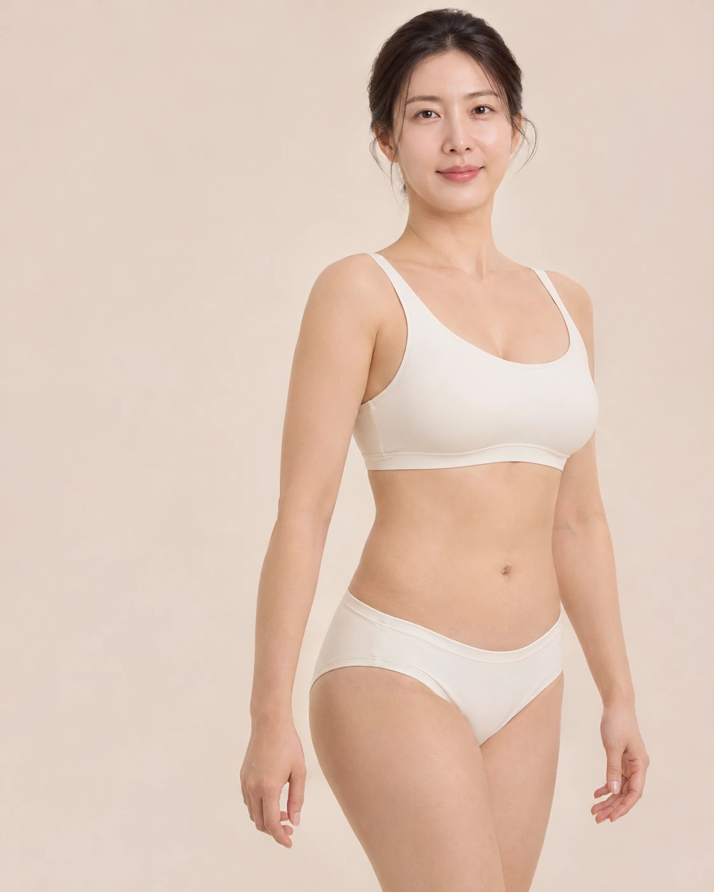
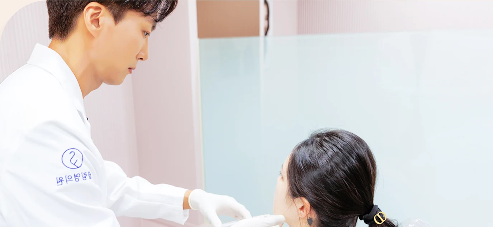
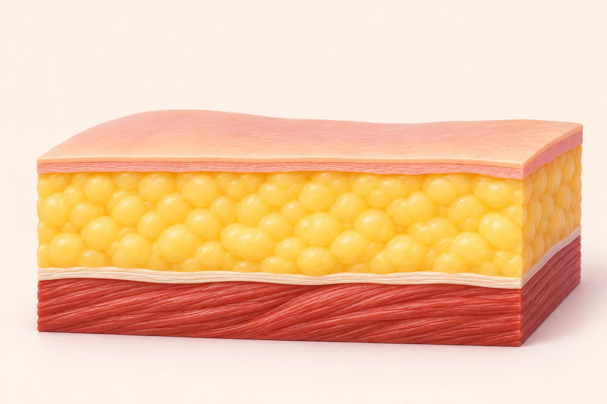
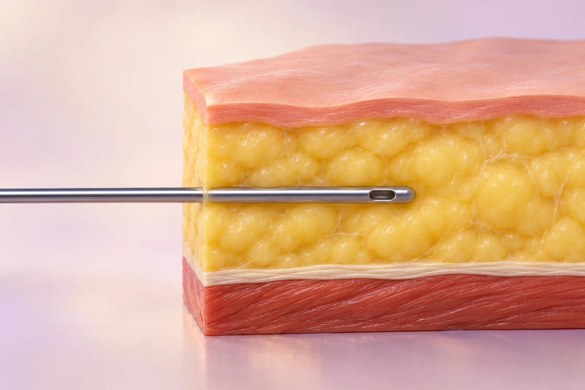
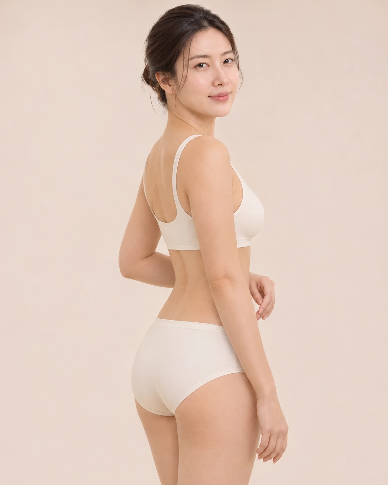
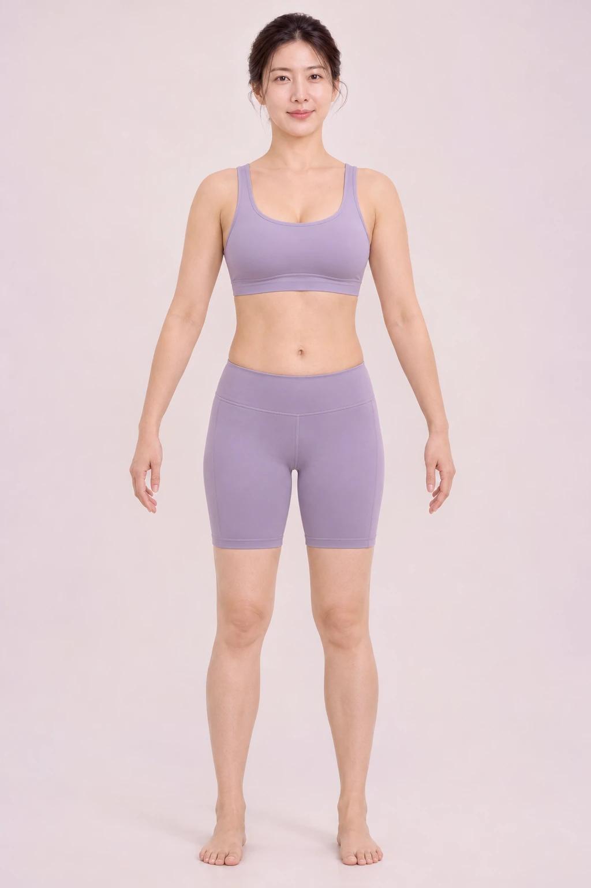
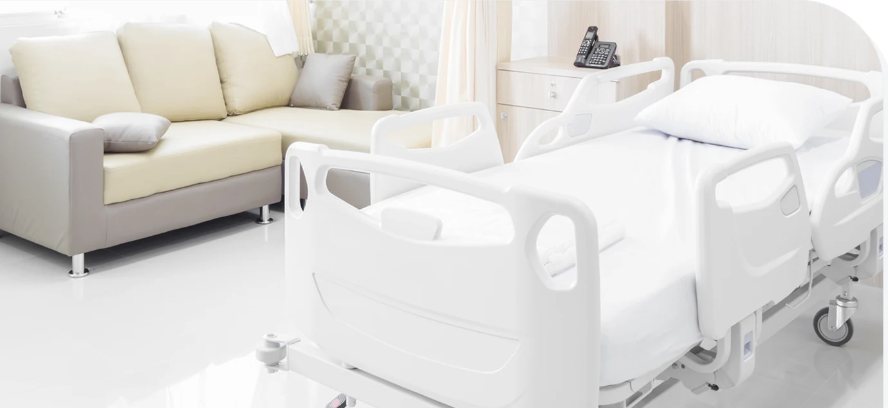

부위에 맞는 캐뉼라
부위별 특성에 따라 다양한 길이와 흡입구의 캐뉼라를 활용합니다. 개인의 상태와 수술 범위에 맞춰 적합한 기구를 선택합니다.

한 사람의 체형과 고민, 원하는 변화의 방향을 충분히 듣습니다. 상담과 상태 확인을 바탕으로 개인에게 맞는 진료 계획을 함께 살핍니다.

대표원장이 직접 진료하며, 개인의 상태와 필요를 고려하는 맞춤 진료를 중요하게 생각합니다.
상담에서 확인한 체형을 바탕으로 매뉴얼 흡입 방식부터 흉터 관리 과정까지 설명합니다.
지방흡입은 캐뉼라를 통해 피하지방에 접근하는 수술입니다. 슬림영은 진동 기계식과 구분되는 매뉴얼 흡입 방식을 안내합니다.

피부체형의 바깥 표면
피하지방흡입 원리를 설명하는 지방층
근막근육을 덮는 결합조직
근육지방층 아래의 구조
다양한 길이와 흡입구의 캐뉼라를 사용해 부위에 맞춰 접근하고, 세밀하게 지방을 제거하는 과정입니다.
캐뉼라의 선택과 접근 범위는 개인의 상태와 수술 계획에 따라 달라집니다.

부위별 특성에 따라 다양한 길이와 흡입구의 캐뉼라를 활용합니다. 개인의 상태와 수술 범위에 맞춰 적합한 기구를 선택합니다.
수술 중 조직 손상과 출혈을 고려하는 진료 원칙을 바탕으로 수술 방법을 안내합니다.
피부 보호, 세심한 봉합과 수술 후 흉터 관리를 하나의 과정으로 살핍니다.
작은 절개도 신중하게 살피는 것이 중요합니다. 눈에 덜 띄는 위치를 고려하고 피부 보호와 봉합, 레이저를 통한 흉터 관리를 함께 살핍니다.
수술 후 흉터와 회복 양상에는 개인차가 있으며, 흉터가 전혀 남지 않는 결과를 보장하지 않습니다.

옷이나 자세에 따른 노출을 함께 살핍니다. 개인별 체형과 수술 범위에 따라 절개 위치와 개수를 계획합니다.
슬림영의 자체 피부 보호기를 활용해 진입부를 살피고, 작은 절개를 세심하게 봉합하는 과정을 중요하게 생각합니다.
레이저를 통한 흉터 관리의 적용 여부와 시점은 상태를 확인한 뒤 안내합니다.
다이어트 후에도 한 부위의 고민이 남거나, 절개와 흉터가 걱정된다면 현재 상태와 원하는 방향을 충분히 이야기해 주세요.

팔의 체형과 피부 상태, 흉터에 대한 고민을 함께 살피며 상담합니다.
궁금한 부위를 선택해 상담 내용을 살펴보세요. 자세한 진료 계획은 개인의 상태를 확인한 뒤 안내합니다.
온라인 상담수술 후에는 환자의 상태와 불편한 점을 확인하고 회복 과정을 안내합니다. 흉터 관리 방법과 진료 일정은 상태에 따라 상담합니다.
회복 기간과 일상 복귀 시점은 개인의 상태와 수술 범위에 따라 달라집니다.

흉터가 전혀 생기지 않는다는 의미는 아닙니다. 절개 위치, 피부 보호와 봉합, 수술 후 관리 과정을 살피며 흉터와 회복 양상은 개인마다 다를 수 있습니다.
부위와 개인의 체형, 수술 계획에 따라 달라집니다. 본문 그림은 원리와 상담 위치를 이해하기 위한 개념도이며 개인별 수술 설계가 아닙니다.
현재 상태와 수술 범위를 확인한 뒤 의료진에게 안내받습니다. 레이저를 통한 흉터 관리는 개인의 회복 상태에 따라 적용 여부와 시점을 안내합니다.